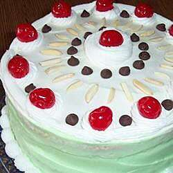

CASSATA

Cassata is believed to have originated in Palermo in the 10th century, when under Muslim rule. The word al-qaššāṭī (القشاطي,
Arabic for "the cassata-maker") was first mentioned in Corleone in 1178.
The Arabic word qas'ah, from which cassata may derive, refers to the bowl that is used to shape the cake.
Historian John Dickie claims instead that the Sicilian word cassata did not derive from Arabic qaššāṭah قشاطة, "bowl", as is often claimed, but from Latin caseāta ("cheese concoction").
He observes that cassata did not signify a dessert until the late 17th century and did not take on its current striped form until the 18th century. Cassata, Dickie finds, "is the subject of an invented tradition based on the claim that its roots lie in the Muslim Middle Ages.
Many other local food traditions purport to be as old."
Ingredients
- 1 ½ cups cake flour
- ½ teaspoon baking powder
- ¼ teaspoon salt
- 5 eggs
- ½ cup cold water
- 1 ¼ cups white sugar
- 1 teaspoon vanilla extract
- ½ teaspoon cream of tartar
- 2 pounds whole milk ricotta cheese
- 2 ¼ cups confectioners' sugar
- ½ teaspoon ground cinnamon
- 1 ½ teaspoons vanilla extract
- 2 (1 ounce) squares semi-sweet chocolate
- ½ cup candied lemon peel
- ⅓ cup white sugar
- ¼ cup water
- 2 tablespoons light rum
- 6 (1 ounce) squares bittersweet chocolate, chopped
- ⅓ cup heavy whipping cream
- 3 tablespoons unsalted butter, cubed
Steps
- Preheat the oven to 325 degrees F (165 degrees C). Grease and line with parchment paper 2 nine inch round layer pans.
- Sift the flour, baking powder, and salt together.
- Separate the eggs and set the egg whites aside. Beat the egg yolks together on medium-high speed until very thick, about 4 minutes. Gradually add the cold water. Add 1- 1/4 cups of the white sugar, slowly, and beat well for about 3 more minutes. Add 1 teaspoon of the vanilla. Sift the flour mixture over the egg yolk mixture and fold in.
- Beat the egg whites and cream of tartar together until stiff peaks form. Fold this into the yolk mixture. Divide batter between the pans.
- Bake at 325 degrees F (165 degrees C) for 25 minutes. Cool on rack for 10 minutes and then invert and cool completely.
- Cut each cake layer in half. Place one of the 4 halves on a cake board or plate and sprinkle with a little of the Rum Syrup. Spread about 1-1/2 cups of the Filling over this layer. Add a second layer of cake and repeat this procedure. Top the cake with the last layer of cake. Chill at least 4 hours. Spread Chocolate Glaze over top of cake.
- To Make Ricotta Cheese Filling: Beat the ricotta cheese well and add the confectioner's sugar and cinnamon. Add 1-1/2 teaspoons of the vanilla and grate 2 ounces of the chocolate in using the coarse side of a grater. Stir in the candied lemon peel and mix. Chill until ready to use.
- To Make The Rum Syrup: Place 1/3 cup of the sugar and the water in a small saucepan. Bring to a boil over medium heat, stirring to dissolve sugar. Boil 1 minute and then remove from heat and add the rum. Cool to room temperature.
- To Make The Chocolate Glaze: Melt 6 ounces of the chocolate and the cream in the microwave, whisk smooth. Add the butter and whisk until dissolved. Cool mixture until spreadable. Spread over the top of the cake.